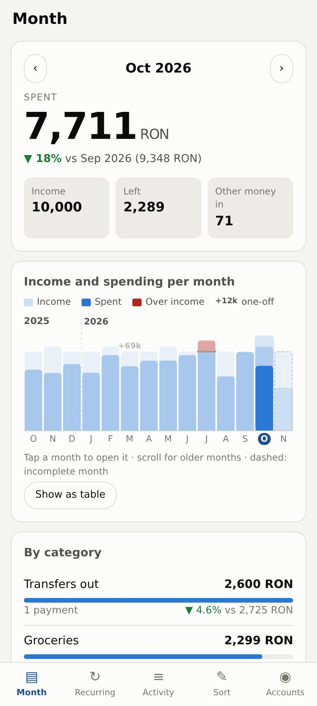

일상 도구
Spendosaurus
첫 예상 금액부터 마지막 할부금까지, 가족의 큰 지출을 계획하세요.
내 돈이 어디로 가고 매달 무엇을 내는지, 내 은행 계좌에서 내 서버로 확인하세요.
Open Banking Hub는 직접 호스팅하며 읽기 전용입니다. 각자 자신만의 비공개 사본을 실행합니다.

Open Banking Hub(줄여서 Bank Hub)는 내 은행 계좌를 직접 호스팅하며 읽기 전용으로 보는 도구입니다. Enable Banking의 PSD2 API로 거래 내역을 가져와 내 컴퓨터의 SQLite 파일에 보관하고, 두 가지 질문에 잘 답합니다. 내 돈은 어디로 갔을까? 그리고 나는 무엇을 정기적으로 내고 있을까?
계좌 데이터를 읽기만 하며, 결제를 할 수 있는 코드는 전혀 없습니다. 개인용 휴대폰 앱은 등록한 기기에 모든 것을 보여 주고, 읽기 전용 MCP 서버는 AI 어시스턴트가 가려진 화면에서 질문에 답하게 합니다. 카테고리, 금액, 알려진 가맹점은 보이지만 사람 이름, IBAN, 결제 메모는 절대 보이지 않습니다.
Revolut, ING Romania, BRD로 만들고 테스트했으며, Enable Banking이 지원하는 은행이라면 작동할 것입니다. Enable Banking의 제한된 운영 모드는 내 계좌에 한해 무료입니다. Open Banking Hub는 Enable Banking이나 어떤 은행과도 관련이 없습니다.
모든 스크린샷은 앱에 내장된 데모의 가상 데이터입니다.



Open Banking Hub는 Python으로 작성되었고 FastAPI와 SQLite를 사용합니다. 늘 켜져 있는 작은 Linux 컴퓨터에서 Docker Compose와 amd64·arm64용으로 게시된 이미지, 또는 systemd 유닛으로 실행합니다. 휴대폰에서는 Tailscale 같은 사설 네트워크로 접속하며, 공개 인터넷에 노출하면 안 됩니다. 외화 금액은 루마니아 국립은행의 일일 환율로 환산합니다. 야간 백업은 무결성을 확인하며, restic을 통한 암호화된 외부 사본도 선택할 수 있습니다. 이 프로젝트는 MIT 라이선스의 오픈 소스입니다.